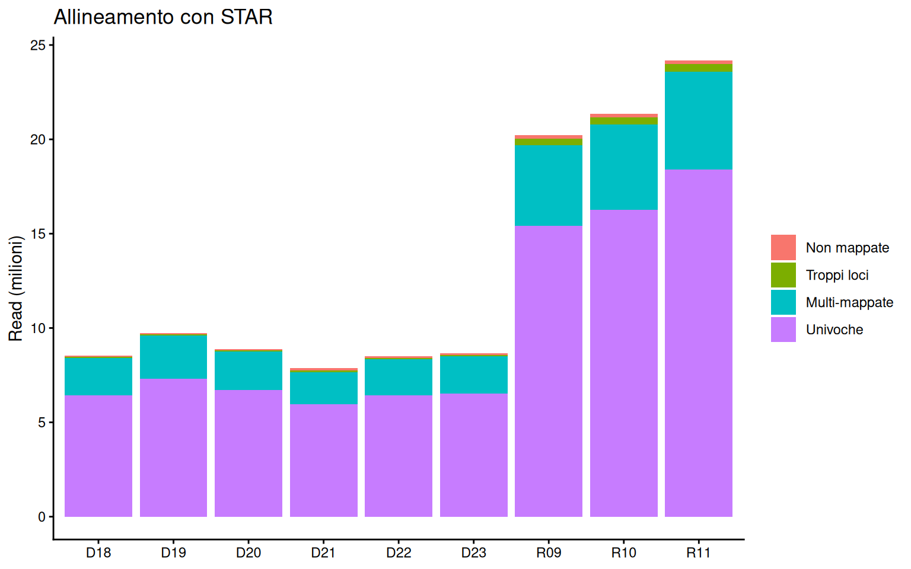
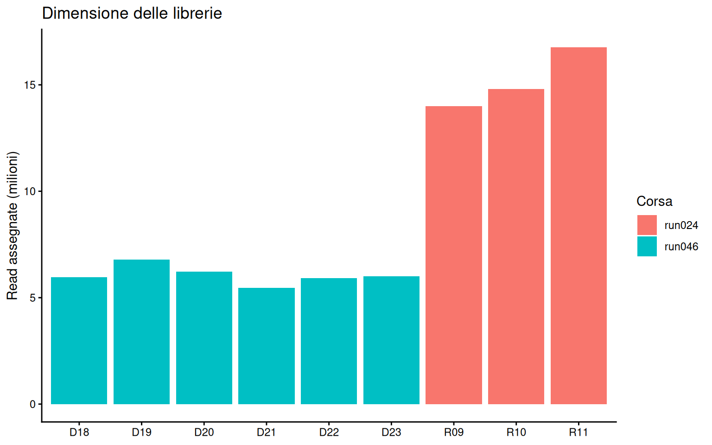
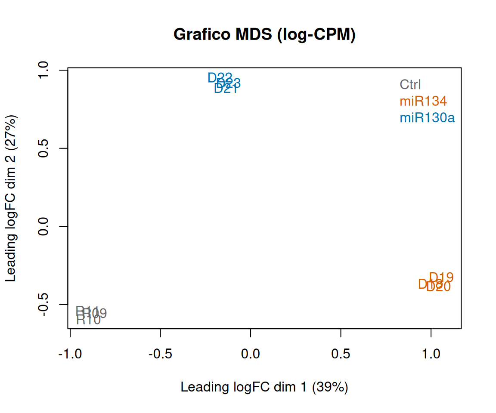

flowchart LR A[FASTQ<br/>R1 + R2] --> B[Controllo integrità<br/>md5sum] B --> C[Controllo qualità<br/>FastQC + MultiQC] C --> D[Trimming<br/>cutadapt] D --> E[Controllo qualità<br/>dopo il trimming] D --> F[Allineamento<br/>STAR] F --> G[Conte per gene<br/>STAR GeneCounts] G --> H[Matrice delle conte<br/>edgeR DGEList] E --> I[MultiQC<br/>report finale] F --> I
Lab 4: dai file FASTQ alla matrice delle conte (QuantSeq 3’ mRNA-seq)
Introduzione
Durante le esercitazioni in laboratorio avete preparato librerie QuantSeq 3’ mRNA-seq FWD (Lexogen) a partire dall’RNA totale estratto da cellule C2C12 (mioblasti di topo). Le cellule sono linee stabili che sovra-esprimono un microRNA: poiché i miRNA reprimono la traduzione e riducono la stabilità dei loro mRNA bersaglio, ci aspettiamo che i target di ciascun miRNA siano down-regolati rispetto alle cellule di controllo.
Le librerie sono state sequenziate su uno strumento Illumina. In questa esercitazione seguiamo, passo dopo passo, tutto quello che succede tra l’output del sequenziatore (i file FASTQ) e l’oggetto che useremo per l’analisi statistica (la matrice delle conte):
I passaggi da riga di comando (dal controllo dei file alle conte per gene) sono stati eseguiti sul cluster di calcolo del laboratorio: il codice è riportato qui perché possiate capirlo e riprodurlo, ma non dovete eseguirlo. L’ultima parte (la costruzione della matrice delle conte) si fa in R e la eseguirete voi.
I campioni
| Campione | Condizione | Corsa di sequenziamento |
|---|---|---|
| D18, D19, D20 | sovra-espressione di miRNA A | corsa 046 |
| D21, D22, D23 | sovra-espressione di miRNA B | corsa 046 |
| R09, R10, R11 | cellule di controllo | corsa 024 |
WarningDue corse di sequenziamento
I campioni di controllo sono stati sequenziati in una corsa diversa (UNIPD-024) rispetto ai campioni con i miRNA (UNIPD-046). Tenetelo a mente: ne vedremo le conseguenze più volte durante l’esercitazione.
La libreria QuantSeq FWD
Ricordiamo come viene costruita la libreria (vedi il protocollo dell’esercitazione e il manuale Lexogen):
- retrotrascrizione con un primer oligo(dT) che porta una parte dell’adattatore Illumina della Read 2;
- rimozione dello stampo di RNA;
- sintesi della seconda elica con random primer che portano una parte dell’adattatore Illumina della Read 1;
- purificazione con biglie e PCR, che aggiunge gli indici (i5, i7) e le sequenze per la flow cell.
Si genera un solo frammento per trascritto, vicino all’estremità 3’ dell’mRNA. Di conseguenza:
- la Read 1 parte dal random primer e legge la sequenza dell’mRNA verso la coda di poli(A), nello stesso orientamento dell’mRNA (forward stranded);
- la Read 2 parte dall’oligo(dT): legge prima un lungo tratto di T e solo dopo l’inserto. Per questo motivo Lexogen sconsiglia il sequenziamento paired-end per QuantSeq FWD.
I nostri dati sono stati comunque sequenziati in paired-end, 2 × 151 bp. Queste sono le prime read del campione D18:
Read 1 (R1), 151 nt
TNGCCCCTCAGACTGTACCAATAAAGGCCCATTTGTACAT <- mRNA, estremità 3' (40 nt)
AAAAAAAAAAAAAAAAAA <- coda di poli(A) (18 nt)
AGATCGGAAGAGCACACGTCTGAACTCCAGTCAC... <- adattatore Illumina + indice
...GGGGGGGGGGGGGGGGGGG <- poli(G)
Read 2 (R2), 151 nt
NTTTTTTTTTTTTTTTTT <- poli(T) (18 nt)
ATGTACAAATGGGCCTTTATTGGTACAGTCTGAGGGGCAA <- mRNA, reverse complement (40 nt)
AGATCGGAAGAGCGTCGTGTAGGGAAAGAG... <- adattatore Illumina
...GGGGGGGGGGGGGG <- poli(G)Ogni read è un’unica sequenza di 151 nt: qui la dividiamo nei suoi segmenti.
Osservate bene: i 40 nt di mRNA in R2 sono il reverse complement dei 40 nt in R1, perché le due read provengono dalle due estremità dello stesso frammento. Poiché l’inserto (40 nt) è molto più corto della read (151 nt), entrambe le read attraversano tutto l’inserto e finiscono nell’adattatore e in una coda di G.
NotePerché poli(G)?
Gli strumenti Illumina più recenti (NovaSeq, NextSeq) usano una chimica a due colori: la base G corrisponde a “nessun segnale”. Quando la polimerasi arriva alla fine del frammento non c’è più niente da leggere, e lo strumento chiama una serie di G con qualità alta.
Decisione: per l’analisi usiamo solo la Read 1. La Read 2 non aggiunge informazione e la sua qualità è compromessa dal tratto di poli(T).
TipDomanda
Il protocollo dice che non è necessario purificare l’RNA poliadenilato né rimuovere l’RNA ribosomiale. Perché? Quale passaggio della preparazione della libreria seleziona gli RNA messaggeri?
Ambiente di calcolo
Tutti i programmi sono stati installati in ambienti conda:
| Programma | Versione | Uso |
|---|---|---|
| FastQC | 0.12.1 | controllo qualità delle read |
| MultiQC | 1.32 | aggregazione dei report di qualità |
| cutadapt | 5.2 | rimozione di adattatori e poli(A) |
| STAR | 2.7.10b | allineamento splice-aware e conta delle read per gene |
I job sono stati lanciati sul cluster con lo scheduler SLURM. La cartella del progetto è organizzata così:
miRNA_C2C12/
├── fastq/ # file FASTQ grezzi (R1 e R2) + checksum md5
├── trimmed/ # R1 dopo il trimming + log di cutadapt
├── star/ # una cartella per campione: BAM, log, ReadsPerGene.out.tab
├── qc/
│ ├── fastqc/ # FastQC sulle read grezze
│ ├── fastqc_trimmed/ # FastQC sulle read dopo il trimming
│ └── multiqc/ # report MultiQC
├── counts/ # matrice delle conte
├── scripts/ # script SLURM
└── logs/ # log di SLURMPasso 0: controllo dell’integrità dei file
Insieme a ogni file FASTQ la facility di sequenziamento fornisce un file .md5 che contiene il suo checksum: una “impronta digitale” del file, calcolata a partire dal suo contenuto. Il primo passo, ogni volta che si ricevono o si copiano dei dati, è ricalcolare il checksum e confrontarlo con quello fornito: se coincidono, il file è arrivato integro.
cd /mnt/indraccolo/miRNA_C2C12/fastq
cat *.md5 > all.md5
md5sum -c all.md5 # ogni file deve risultare "OK"Se anche un solo file risulta FAILED, va scaricato di nuovo prima di procedere con l’analisi.
TipDomanda
È stato scaricato un file FASTQ di 700 MB e la sua dimensione è corretta. Perché questo non basta per essere sicuri che il file sia integro?
Passo 1: controllo qualità delle read grezze
FastQC calcola per ogni file FASTQ una serie di metriche di qualità (moduli) e assegna a ciascuna un esito PASS, WARN o FAIL. MultiQC raccoglie i risultati di tutti i campioni in un unico report.
#!/bin/bash
#SBATCH -J fastqc
#SBATCH -c 18
#SBATCH --mem=32G
#SBATCH -t 04:00:00
conda activate /mnt/spca/conda/fastqc
BASE=/mnt/indraccolo/miRNA_C2C12
fastqc -t 18 -o $BASE/qc/fastqc $BASE/fastq/*.fastq.gz
multiqc $BASE/qc/fastqc -o $BASE/qc/multiqc -n multiqc_fastqc📊 Report MultiQC: read grezze (R1 e R2)
library(knitr)
qc <- read.csv("data/quantseq/preprocessing_summary.csv")
kable(qc[, c("id", "condition", "run", "raw_reads", "raw_dup_pct", "raw_gc_pct")],
col.names = c("Campione", "Condizione", "Corsa", "Read (R1)", "% duplicati", "% GC"),
format.args = list(big.mark = "."))| Campione | Condizione | Corsa | Read (R1) | % duplicati | % GC |
|---|---|---|---|---|---|
| R09 | Ctrl | run024 | 20.866.857 | 71.1 | 43 |
| R10 | Ctrl | run024 | 22.061.619 | 72.1 | 42 |
| R11 | Ctrl | run024 | 24.952.571 | 74.9 | 42 |
| D18 | miR_A | run046 | 8.738.077 | 50.0 | 41 |
| D19 | miR_A | run046 | 10.007.738 | 51.5 | 40 |
| D20 | miR_A | run046 | 9.121.516 | 50.2 | 41 |
| D21 | miR_B | run046 | 8.049.061 | 47.2 | 42 |
| D22 | miR_B | run046 | 8.707.707 | 49.5 | 42 |
| D23 | miR_B | run046 | 8.870.788 | 50.1 | 41 |
ImportantMolti FAIL sono attesi
FastQC è stato pensato per il sequenziamento del genoma intero, in cui le read sono frammenti casuali del genoma. Diversi moduli risultano FAIL in tutti i campioni QuantSeq, e questo è una conseguenza del tipo di libreria, non di un campione di cattiva qualità:
- Per base sequence content: in R1 le prime ~12 basi sono sbilanciate a causa del random primer; in R2 le prime ~15 basi sono quasi al 100% T (oligo-dT);
- Adapter content: fino al ~65% delle read R1 contiene poli(A) alla fine, perché l’inserto è più corto della read;
- Sequence duplication levels: tutte le read di un gene partono dalla stessa estremità 3’, quindi un gene molto espresso produce migliaia di read identiche;
- Overrepresented sequences (solo R2): read fatte solo di T o solo di G.
TipDomanda
Guardate la tabella General Statistics del report MultiQC. Senza leggere i nomi dei campioni, riuscite a capire quali campioni sono stati sequenziati insieme? Quali metriche ve lo permettono?
Passo 2: trimming con cutadapt
Poiché l’inserto è spesso più corto di 151 bp, la Read 1 legge dentro la coda di poli(A), poi l’adattatore e infine il poli(G). Queste basi non appartengono al genoma e devono essere rimosse prima dell’allineamento:
cutadapt -j 8 \
-a "A{18}" -a AGATCGGAAGAGC \
--nextseq-trim=20 -m 20 \
-o trimmed/${S}_R1.trim.fastq.gz \
fastq/${S}_R1.fastq.gz > trimmed/${S}.cutadapt.log| Opzione | Significato |
|---|---|
-a "A{18}" |
adattatore 3’ formato da 18 A: rimuove la coda di poli(A) e tutto quello che segue (adattatore e poli(G)) |
-a AGATCGGAAGAGC |
adattatore Illumina, per gli inserti senza coda di poli(A) |
--nextseq-trim=20 |
trimming di qualità dall’estremità 3’, che tratta le code di G degli strumenti a due colori come bassa qualità |
-m 20 |
scarta le read più corte di 20 nt dopo il trimming |
Lo script è stato lanciato come job array di SLURM: un unico script eseguito 9 volte, una per campione, con $SLURM_ARRAY_TASK_ID che va da 0 a 8:
#SBATCH --array=0-8
SAMPLES=(UNIPD-046-D18 UNIPD-046-D19 UNIPD-046-D20 UNIPD-046-D21 UNIPD-046-D22 UNIPD-046-D23 UNIPD-024-R09 UNIPD-024-R10 UNIPD-024-R11)
S=${SAMPLES[$SLURM_ARRAY_TASK_ID]}Ecco le prime read R1 di D18 prima e dopo il trimming:
prima: TNGCCCCTCAGACTGTACCAATAAAGGCCCATTTGTACATAAAAAAAAAAAAAAAAAAAGATCGGAAGAGCACACG...GGGGGGGG (151 nt)
dopo: TNGCCCCTCAGACTGTACCAATAAAGGCCCATTTGTACAT (40 nt)
prima: TNATCGCCTGGAGAAATGACCGCCTTTCTTACAACCAAAACAGTCCC...AGCTGAAGAATCAAAAAAA (151 nt)
dopo: TNATCGCCTGGAGAAATGACCGCCTTTCTTACAACCAAAACAGTCCC...AGCTGAAGAATC (144 nt)qc$pct_too_short <- round(100 * qc$too_short / qc$raw_reads, 2)
kable(qc[, c("id", "raw_reads", "trimmed_reads", "pct_too_short",
"trim_bases_pct", "trim_mean_len")],
col.names = c("Campione", "Read prima", "Read dopo", "% scartate (< 20 nt)",
"% basi rimosse", "Lunghezza media dopo (nt)"),
format.args = list(big.mark = "."))| Campione | Read prima | Read dopo | % scartate (< 20 nt) | % basi rimosse | Lunghezza media dopo (nt) |
|---|---|---|---|---|---|
| R09 | 20.866.857 | 20.223.841 | 3.08 | 29.7 | 109.5 |
| R10 | 22.061.619 | 21.340.934 | 3.27 | 30.9 | 107.9 |
| R11 | 24.952.571 | 24.189.828 | 3.06 | 30.5 | 108.3 |
| D18 | 8.738.077 | 8.524.675 | 2.44 | 28.5 | 110.8 |
| D19 | 10.007.738 | 9.737.853 | 2.70 | 28.8 | 110.5 |
| D20 | 9.121.516 | 8.893.672 | 2.50 | 28.0 | 111.6 |
| D21 | 8.049.061 | 7.876.428 | 2.14 | 26.9 | 112.8 |
| D22 | 8.707.707 | 8.505.955 | 2.32 | 28.0 | 111.3 |
| D23 | 8.870.788 | 8.660.278 | 2.37 | 28.1 | 111.3 |
È stato rimosso circa il 30% delle basi sequenziate, ma solo il 2–3% delle read è stato scartato.
Dopo il trimming abbiamo rilanciato FastQC sulle R1 ripulite:
📊 Report MultiQC: read dopo il trimming (R1)
TipDomanda
Confrontate i moduli Adapter content, Sequence length distribution e Per base sequence quality prima e dopo il trimming. Cosa è cambiato? Perché la percentuale di read duplicate è leggermente aumentata dopo il trimming?
Passo 3: allineamento con STAR
Le read vengono allineate al genoma di riferimento del topo (GRCm39) con STAR, un allineatore splice-aware: anche se le read QuantSeq sono vicine all’estremità 3’, alcune di esse attraversano una giunzione esone–esone.
STAR ha bisogno di un indice del genoma, costruito una volta sola a partire dal FASTA del genoma e dall’annotazione dei geni (GTF). Abbiamo usato un indice già disponibile sul cluster, costruito con l’annotazione Ensembl release 116:
STAR --runMode genomeGenerate --runThreadN 16 \
--genomeDir mmusculus_v116_149 \
--genomeFastaFiles Mus_musculus.GRCm39.dna.primary_assembly.fa \
--sjdbGTFfile Mus_musculus.GRCm39.116.gtf \
--sjdbOverhang 149 # lunghezza delle read - 1Allineamento, con i parametri consigliati da Lexogen per QuantSeq FWD:
STAR --runThreadN 8 \
--genomeDir $IDX \
--readFilesIn trimmed/${S}_R1.trim.fastq.gz \
--readFilesCommand zcat \
--outFilterType BySJout \
--outFilterMultimapNmax 20 \
--alignSJoverhangMin 8 \
--alignSJDBoverhangMin 1 \
--outFilterMismatchNmax 999 \
--outFilterMismatchNoverLmax 0.1 \
--alignIntronMin 20 \
--alignIntronMax 1000000 \
--outSAMattributes NH HI NM MD \
--outSAMtype BAM SortedByCoordinate \
--quantMode GeneCounts \
--outFileNamePrefix star/${S}/| Opzione | Significato |
|---|---|
--readFilesIn |
un solo file (R1): STAR lavora in modalità single-end |
--outFilterMultimapNmax 20 |
le read che mappano su più di 20 loci sono considerate non mappate |
--outFilterMismatchNoverLmax 0.1 |
al massimo 1 mismatch ogni 10 basi allineate |
--outSAMtype BAM SortedByCoordinate |
salva gli allineamenti in un file BAM ordinato per posizione genomica |
--quantMode GeneCounts |
conta le read per gene durante l’allineamento |
Le prime ~12 basi di R1 hanno più mismatch a causa del random primer. STAR le gestisce automaticamente con il soft-clipping: le estremità di una read che non corrispondono al genoma vengono escluse dall’allineamento.
Per ogni campione STAR scrive un file Log.final.out con le statistiche dell’allineamento:
qc$pct_unique <- round(100 * qc$uniquely_mapped / qc$trimmed_reads, 1)
qc$pct_multi <- round(100 * qc$multimapped / qc$trimmed_reads, 1)
qc$pct_toomany <- round(100 * qc$too_many_loci / qc$trimmed_reads, 1)
qc$pct_unmap <- round(100 * qc$unmapped / qc$trimmed_reads, 1)
kable(qc[, c("id", "trimmed_reads", "uniquely_mapped", "pct_unique",
"pct_multi", "pct_toomany", "pct_unmap")],
col.names = c("Campione", "Read in input", "Mappate in modo univoco", "% univoche",
"% multi-mappate", "% troppi loci", "% non mappate"),
format.args = list(big.mark = "."))| Campione | Read in input | Mappate in modo univoco | % univoche | % multi-mappate | % troppi loci | % non mappate |
|---|---|---|---|---|---|---|
| R09 | 20.223.841 | 15.418.375 | 76.2 | 21.2 | 1.7 | 0.9 |
| R10 | 21.340.934 | 16.258.057 | 76.2 | 21.3 | 1.7 | 0.9 |
| R11 | 24.189.828 | 18.409.177 | 76.1 | 21.4 | 1.7 | 0.8 |
| D18 | 8.524.675 | 6.434.365 | 75.5 | 23.0 | 0.8 | 0.7 |
| D19 | 9.737.853 | 7.322.009 | 75.2 | 23.3 | 0.8 | 0.7 |
| D20 | 8.893.672 | 6.728.291 | 75.7 | 22.9 | 0.7 | 0.7 |
| D21 | 7.876.428 | 5.946.772 | 75.5 | 21.9 | 1.0 | 1.6 |
| D22 | 8.505.955 | 6.434.581 | 75.6 | 22.4 | 1.0 | 0.9 |
| D23 | 8.660.278 | 6.535.021 | 75.5 | 22.6 | 1.0 | 0.9 |
library(ggplot2)
library(tidyr)
aln <- pivot_longer(qc[, c("id", "uniquely_mapped", "multimapped", "too_many_loci", "unmapped")],
-id, names_to = "category", values_to = "reads")
aln$category <- factor(aln$category,
levels = c("unmapped", "too_many_loci", "multimapped", "uniquely_mapped"),
labels = c("Non mappate", "Troppi loci", "Multi-mappate", "Univoche"))
ggplot(aln, aes(x = id, y = reads / 1e6, fill = category)) +
geom_col() +
labs(x = NULL, y = "Read (milioni)", fill = NULL, title = "Allineamento con STAR") +
theme_classic()
Circa il 76% delle read mappa su un unico locus in tutti i campioni, mentre il ~22% mappa su più loci. È più che in un RNA-seq classico: le read cadono nei 3’ UTR, che sono ricchi di ripetizioni e sequenze a bassa complessità.
TipDomanda
I campioni di controllo hanno più del doppio delle read rispetto ai campioni con i miRNA. La percentuale di read mappate è diversa tra le due corse di sequenziamento? Cosa vi dice questo sulla qualità delle due corse?
Passo 4: conta delle read per gene
Con --quantMode GeneCounts, STAR conta le read mappate in modo univoco che si sovrappongono agli esoni di ciascun gene e scrive il file ReadsPerGene.out.tab. Le prime quattro righe sono un riepilogo, poi c’è una riga per gene con tre colonne di conte:
| Colonna | Conte per una libreria… |
|---|---|
| 2 | unstranded: la read viene contata qualunque sia il filamento |
| 3 | forward stranded: la read deve essere sullo stesso filamento del gene |
| 4 | reverse stranded: la read deve essere sul filamento opposto |
Quale colonna dobbiamo usare? Guardiamo le righe di riepilogo del campione D21:
N_unmapped 206240 206240 206240
N_multimapping 1723416 1723416 1723416
N_noFeature 333921 345497 5292953
N_ambiguous 776981 142779 7542N_noFeature: read che non si sovrappongono a nessun gene;N_ambiguous: read che si sovrappongono a più di un gene.
Con la colonna 4 quasi tutte le read cadono fuori dai geni: la libreria non è reverse stranded. Le colonne 2 e 3 hanno un numero simile di N_noFeature, ma la colonna 3 ha 5 volte meno read ambigue: quando due geni si sovrappongono su filamenti opposti, conoscere il filamento della read permette di assegnarla al gene giusto. È il vantaggio di una libreria stranded, ed è esattamente quello che ci aspettiamo da QuantSeq FWD: usiamo la colonna 3.
cnt_summ <- read.csv("data/quantseq/star_counts_summary.csv")
cnt_summ$sample <- sub("^UNIPD-0(24|46)-", "", cnt_summ$sample)
cnt_summ$pct_assigned <- round(100 * cnt_summ$N_assigned /
(cnt_summ$N_assigned + cnt_summ$N_noFeature + cnt_summ$N_ambiguous), 1)
kable(cnt_summ,
col.names = c("Campione", "Non mappate", "Multi-mappate", "Nessun gene", "Ambigue",
"Assegnate a un gene", "% delle univoche assegnate"),
format.args = list(big.mark = "."))| Campione | Non mappate | Multi-mappate | Nessun gene | Ambigue | Assegnate a un gene | % delle univoche assegnate |
|---|---|---|---|---|---|---|
| R09 | 524.240 | 4.281.226 | 1.051.545 | 359.275 | 14.007.555 | 90.8 |
| R10 | 538.866 | 4.544.011 | 1.086.559 | 375.813 | 14.795.685 | 91.0 |
| R11 | 611.022 | 5.169.629 | 1.209.989 | 428.155 | 16.771.033 | 91.1 |
| D18 | 126.586 | 1.963.724 | 319.002 | 161.684 | 5.953.679 | 92.5 |
| D19 | 145.195 | 2.270.649 | 353.511 | 185.427 | 6.783.071 | 92.6 |
| D20 | 129.169 | 2.036.212 | 321.715 | 172.746 | 6.233.830 | 92.7 |
| D21 | 206.240 | 1.723.416 | 345.497 | 142.779 | 5.458.496 | 91.8 |
| D22 | 168.383 | 1.902.991 | 371.413 | 151.797 | 5.911.371 | 91.9 |
| D23 | 165.134 | 1.960.123 | 364.358 | 155.029 | 6.015.634 | 92.1 |
Più del 90% delle read mappate in modo univoco viene assegnato a un gene.
NotePerché non serve normalizzare per la lunghezza dei geni?
In un esperimento RNA-seq classico un trascritto lungo produce più frammenti di uno corto, quindi per confrontare geni diversi le conte vanno corrette per la lunghezza (per esempio RPKM, TPM). In QuantSeq ogni trascritto produce un solo frammento, qualunque sia la sua lunghezza: le conte sono direttamente proporzionali al numero di molecole.
Passo 5: costruire la matrice delle conte in R
Adesso tocca a voi. Per ogni campione abbiamo un file ReadsPerGene.out.tab (compresso con gzip) nella cartella data/quantseq/star/.
files <- list.files("data/quantseq/star", pattern = "ReadsPerGene.out.tab.gz$",
full.names = TRUE)
names(files) <- sub(".ReadsPerGene.out.tab.gz", "", basename(files))
basename(files)[1] "UNIPD-024-R09.ReadsPerGene.out.tab.gz"
[2] "UNIPD-024-R10.ReadsPerGene.out.tab.gz"
[3] "UNIPD-024-R11.ReadsPerGene.out.tab.gz"
[4] "UNIPD-046-D18.ReadsPerGene.out.tab.gz"
[5] "UNIPD-046-D19.ReadsPerGene.out.tab.gz"
[6] "UNIPD-046-D20.ReadsPerGene.out.tab.gz"
[7] "UNIPD-046-D21.ReadsPerGene.out.tab.gz"
[8] "UNIPD-046-D22.ReadsPerGene.out.tab.gz"
[9] "UNIPD-046-D23.ReadsPerGene.out.tab.gz"Leggiamo un file per capirne la struttura:
x <- read.delim(files[1], header = FALSE)
head(x) V1 V2 V3 V4
1 N_unmapped 524240 524240 524240
2 N_multimapping 4281226 4281226 4281226
3 N_noFeature 1016870 1051545 13725026
4 N_ambiguous 1993505 359275 16611
5 ENSMUSG00000104478 0 0 0
6 ENSMUSG00000104385 3 3 0dim(x)[1] 78352 4Le prime 4 righe sono il riepilogo visto sopra: le saltiamo e teniamo gli identificativi dei geni (colonna 1) e le conte forward stranded (colonna 3). Ripetiamo l’operazione per ogni file con sapply(), che restituisce una matrice con una colonna per campione:
read_counts <- function(f) {
x <- read.delim(f, header = FALSE, skip = 4)
setNames(x$V3, x$V1)
}
counts <- sapply(files, read_counts)
dim(counts)[1] 78348 9head(counts) UNIPD-024-R09 UNIPD-024-R10 UNIPD-024-R11 UNIPD-046-D18
ENSMUSG00000104478 0 0 0 0
ENSMUSG00000104385 3 5 7 1
ENSMUSG00000101231 0 0 0 0
ENSMUSG00000101097 0 0 0 0
ENSMUSG00000100764 4 0 7 1
ENSMUSG00000100831 0 0 0 0
UNIPD-046-D19 UNIPD-046-D20 UNIPD-046-D21 UNIPD-046-D22
ENSMUSG00000104478 0 0 0 0
ENSMUSG00000104385 1 0 2 0
ENSMUSG00000101231 0 0 0 0
ENSMUSG00000101097 0 0 0 0
ENSMUSG00000100764 0 2 3 0
ENSMUSG00000100831 0 0 0 0
UNIPD-046-D23
ENSMUSG00000104478 0
ENSMUSG00000104385 0
ENSMUSG00000101231 0
ENSMUSG00000101097 0
ENSMUSG00000100764 0
ENSMUSG00000100831 0Prima di andare avanti controlliamo che tutti i file contengano gli stessi geni nello stesso ordine, e che le somme per colonna corrispondano ai valori N_assigned della tabella precedente:
gene_ids <- lapply(files, function(f) read.delim(f, header = FALSE, skip = 4)$V1)
all(sapply(gene_ids, identical, gene_ids[[1]]))[1] TRUEcolSums(counts)UNIPD-024-R09 UNIPD-024-R10 UNIPD-024-R11 UNIPD-046-D18 UNIPD-046-D19
14007555 14795685 16771033 5953679 6783071
UNIPD-046-D20 UNIPD-046-D21 UNIPD-046-D22 UNIPD-046-D23
6233830 5458496 5911371 6015634 Informazioni sui campioni
Creiamo un data.frame con le informazioni sui campioni. Assegniamo la condizione a partire dal nome del campione, così il risultato non dipende dall’ordine dei file:
id <- sub("^UNIPD-0(24|46)-", "", colnames(counts))
condition_map <- c(D18 = "miR_A", D19 = "miR_A", D20 = "miR_A",
D21 = "miR_B", D22 = "miR_B", D23 = "miR_B",
R09 = "Ctrl", R10 = "Ctrl", R11 = "Ctrl")
samples <- data.frame(
sample = colnames(counts),
id = id,
condition = factor(condition_map[id], levels = c("Ctrl", "miR_A", "miR_B")),
run = factor(ifelse(grepl("^UNIPD-024", colnames(counts)), "run024", "run046")),
row.names = colnames(counts)
)
samples sample id condition run
UNIPD-024-R09 UNIPD-024-R09 R09 Ctrl run024
UNIPD-024-R10 UNIPD-024-R10 R10 Ctrl run024
UNIPD-024-R11 UNIPD-024-R11 R11 Ctrl run024
UNIPD-046-D18 UNIPD-046-D18 D18 miR_A run046
UNIPD-046-D19 UNIPD-046-D19 D19 miR_A run046
UNIPD-046-D20 UNIPD-046-D20 D20 miR_A run046
UNIPD-046-D21 UNIPD-046-D21 D21 miR_B run046
UNIPD-046-D22 UNIPD-046-D22 D22 miR_B run046
UNIPD-046-D23 UNIPD-046-D23 D23 miR_B run046Annotazione dei geni
Le righe della matrice sono identificativi Ensembl dei geni (ENSMUSG...). L’indice di STAR contiene il file geneInfo.tab con il simbolo e il biotipo di ciascun gene:
genes <- read.delim("data/quantseq/geneInfo.tab.gz", header = FALSE, skip = 1,
col.names = c("ensembl_id", "symbol", "biotype"))
rownames(genes) <- genes$ensembl_id
genes <- genes[rownames(counts), ]
head(genes) ensembl_id symbol biotype
ENSMUSG00000104478 ENSMUSG00000104478 Gm38212 TEC
ENSMUSG00000104385 ENSMUSG00000104385 Gm7449 processed_pseudogene
ENSMUSG00000101231 ENSMUSG00000101231 Gm28283 processed_pseudogene
ENSMUSG00000101097 ENSMUSG00000101097 Gm6679 processed_pseudogene
ENSMUSG00000100764 ENSMUSG00000100764 Gm29155 lncRNA
ENSMUSG00000100831 ENSMUSG00000100831 Gm17847 processed_pseudogenehead(sort(table(genes$biotype), decreasing = TRUE), 8)
lncRNA protein_coding processed_pseudogene
32889 21818 9312
TEC miRNA unprocessed_pseudogene
3219 2206 2172
snoRNA snRNA
1507 1381 L’oggetto DGEList
Come nelle esercitazioni precedenti usiamo edgeR. L’oggetto DGEList raccoglie in un unico oggetto la matrice delle conte, le informazioni sui campioni e l’annotazione dei geni:
library(edgeR)
dge <- DGEList(counts = counts, samples = samples, genes = genes)
dgeAn object of class "DGEList"
$counts
UNIPD-024-R09 UNIPD-024-R10 UNIPD-024-R11 UNIPD-046-D18
ENSMUSG00000104478 0 0 0 0
ENSMUSG00000104385 3 5 7 1
ENSMUSG00000101231 0 0 0 0
ENSMUSG00000101097 0 0 0 0
ENSMUSG00000100764 4 0 7 1
UNIPD-046-D19 UNIPD-046-D20 UNIPD-046-D21 UNIPD-046-D22
ENSMUSG00000104478 0 0 0 0
ENSMUSG00000104385 1 0 2 0
ENSMUSG00000101231 0 0 0 0
ENSMUSG00000101097 0 0 0 0
ENSMUSG00000100764 0 2 3 0
UNIPD-046-D23
ENSMUSG00000104478 0
ENSMUSG00000104385 0
ENSMUSG00000101231 0
ENSMUSG00000101097 0
ENSMUSG00000100764 0
78343 more rows ...
$samples
group lib.size norm.factors sample id condition run
UNIPD-024-R09 1 14007555 1 UNIPD-024-R09 R09 Ctrl run024
UNIPD-024-R10 1 14795685 1 UNIPD-024-R10 R10 Ctrl run024
UNIPD-024-R11 1 16771033 1 UNIPD-024-R11 R11 Ctrl run024
UNIPD-046-D18 1 5953679 1 UNIPD-046-D18 D18 miR_A run046
UNIPD-046-D19 1 6783071 1 UNIPD-046-D19 D19 miR_A run046
UNIPD-046-D20 1 6233830 1 UNIPD-046-D20 D20 miR_A run046
UNIPD-046-D21 1 5458496 1 UNIPD-046-D21 D21 miR_B run046
UNIPD-046-D22 1 5911371 1 UNIPD-046-D22 D22 miR_B run046
UNIPD-046-D23 1 6015634 1 UNIPD-046-D23 D23 miR_B run046
$genes
ensembl_id symbol biotype
ENSMUSG00000104478 ENSMUSG00000104478 Gm38212 TEC
ENSMUSG00000104385 ENSMUSG00000104385 Gm7449 processed_pseudogene
ENSMUSG00000101231 ENSMUSG00000101231 Gm28283 processed_pseudogene
ENSMUSG00000101097 ENSMUSG00000101097 Gm6679 processed_pseudogene
ENSMUSG00000100764 ENSMUSG00000100764 Gm29155 lncRNA
78343 more rows ...ggplot(dge$samples, aes(x = id, y = lib.size / 1e6, fill = run)) +
geom_col() +
labs(x = NULL, y = "Read assegnate (milioni)", fill = "Corsa",
title = "Dimensione delle librerie") +
theme_classic()
Filtraggio dei geni poco espressi
Dei ~78.000 geni annotati, la maggior parte non è espressa nelle cellule C2C12. La funzione filterByExpr() mantiene i geni con un numero sufficiente di conte in un numero minimo di campioni, tenendo conto dei gruppi sperimentali e della dimensione delle librerie:
table(rowSums(dge$counts) == 0)
FALSE TRUE
25031 53317 keep <- filterByExpr(dge, group = dge$samples$condition)
table(keep)keep
FALSE TRUE
66628 11720 dge <- dge[keep, , keep.lib.sizes = FALSE]
dim(dge)[1] 11720 9head(sort(table(dge$genes$biotype), decreasing = TRUE), 5)
protein_coding lncRNA
10797 666
processed_pseudogene TEC
186 21
transcribed_processed_pseudogene
17 Normalizzazione e prima esplorazione dei dati
Calcoliamo i fattori di normalizzazione TMM e i valori di log-CPM, poi osserviamo la somiglianza tra i campioni con un grafico di multidimensional scaling (MDS):
dge <- calcNormFactors(dge, method = "TMM")
dge$samples[, c("condition", "run", "lib.size", "norm.factors")] condition run lib.size norm.factors
UNIPD-024-R09 Ctrl run024 13974953 0.9620774
UNIPD-024-R10 Ctrl run024 14760579 0.9761632
UNIPD-024-R11 Ctrl run024 16732384 0.9723675
UNIPD-046-D18 miR_A run046 5938153 1.0229155
UNIPD-046-D19 miR_A run046 6765225 1.0199774
UNIPD-046-D20 miR_A run046 6217789 1.0159532
UNIPD-046-D21 miR_B run046 5444628 1.0069994
UNIPD-046-D22 miR_B run046 5897869 1.0125470
UNIPD-046-D23 miR_B run046 6002093 1.0131849logcpm <- cpm(dge, log = TRUE)cols <- c(Ctrl = "grey40", miR_A = "#D55E00", miR_B = "#0072B2")
plotMDS(logcpm, labels = dge$samples$id,
col = cols[as.character(dge$samples$condition)],
main = "Grafico MDS (log-CPM)")
legend("topright", legend = names(cols), text.col = cols, bty = "n")
WarningBiologia o batch?
La condizione (miRNA o controllo) e la corsa di sequenziamento si sovrappongono perfettamente: tutti i controlli vengono dalla corsa 024 e tutti i campioni con i miRNA dalla corsa 046. Se i controlli si separano dagli altri campioni lungo la prima dimensione, non possiamo dire se questo dipenda dai miRNA o dalla diversa corsa. Dal punto di vista statistico i due effetti sono confusi (confounded): nessun modello può separarli, perché la variabile condition (controllo o miRNA) e la variabile run contengono la stessa informazione.
Il confronto tra miRNA A e miRNA B non ha questo problema, perché tutti e sei i campioni vengono dalla stessa corsa.
TipDomanda
Osservate il grafico MDS. Quali campioni sono vicini tra loro? Le repliche di ciascun gruppo si somigliano? Lungo quale dimensione si separano i due miRNA? Come progettereste l’esperimento per evitare che condizione e corsa di sequenziamento siano confuse?
Salvataggio dei dati per la prossima esercitazione
saveRDS(dge, "data/quantseq/dge_quantseq.rds")Esercitazione: commentare un report FastQC
Ognuno di voi riceverà un report FastQC. Apritelo, leggete tutti i moduli e scrivete un breve commento (5–10 righe) rispondendo alle seguenti domande:
- Di quale campione si tratta? Quale condizione? È la Read 1 o la Read 2, grezza o dopo il trimming?
- Quante read contiene? Quanto sono lunghe?
- Quali moduli sono PASS, WARN, FAIL? Per ogni FAIL, si tratta di un problema reale o di una conseguenza del tipo di libreria QuantSeq?
- Per base sequence quality: come cambia la qualità lungo la read? Perché?
- Per base sequence content: cosa succede nelle prime basi? Cosa succede a metà e alla fine della read?
- Adapter content e Overrepresented sequences: quali sequenze sono presenti? Da dove vengono?
- Sequence duplication levels: quale percentuale di read resterebbe dopo aver rimosso i duplicati? Si tratta di un problema della PCR?
- Terreste questo campione per l’analisi? Perché?
Poi confrontate il vostro report con quello di un compagno che ha lo stesso campione (R1 rispetto a R2, oppure grezzo rispetto a dopo il trimming).
| Campione | Condizione | R1 grezza | R2 grezza | R1 trimmed |
|---|---|---|---|---|
| UNIPD-046-D18 | miR_A | R1 | R2 | R1 trimmed |
| UNIPD-046-D19 | miR_A | R1 | R2 | R1 trimmed |
| UNIPD-046-D20 | miR_A | R1 | R2 | R1 trimmed |
| UNIPD-046-D21 | miR_B | R1 | R2 | R1 trimmed |
| UNIPD-046-D22 | miR_B | R1 | R2 | R1 trimmed |
| UNIPD-046-D23 | miR_B | R1 | R2 | R1 trimmed |
| UNIPD-024-R09 | Ctrl | R1 | R2 | R1 trimmed |
| UNIPD-024-R10 | Ctrl | R1 | R2 | R1 trimmed |
| UNIPD-024-R11 | Ctrl | R1 | R2 | R1 trimmed |
Informazioni sulla sessione
sessionInfo()R version 4.6.2 (2026-10-29)
Platform: x86_64-pc-linux-gnu
Running under: Ubuntu 24.04.5 LTS
Matrix products: default
BLAS: /usr/lib/x86_64-linux-gnu/blas/libblas.so.3.12.0
LAPACK: /usr/lib/x86_64-linux-gnu/lapack/liblapack.so.3.12.0 LAPACK version 3.12.0
locale:
[1] LC_CTYPE=en_US.UTF-8 LC_NUMERIC=C
[3] LC_TIME=en_US.UTF-8 LC_COLLATE=en_US.UTF-8
[5] LC_MONETARY=en_US.UTF-8 LC_MESSAGES=en_US.UTF-8
[7] LC_PAPER=en_US.UTF-8 LC_NAME=C
[9] LC_ADDRESS=C LC_TELEPHONE=C
[11] LC_MEASUREMENT=en_US.UTF-8 LC_IDENTIFICATION=C
time zone: Europe/Rome
tzcode source: system (glibc)
attached base packages:
[1] stats graphics grDevices utils datasets methods base
other attached packages:
[1] edgeR_4.10.7 limma_3.68.5 tidyr_1.3.2 ggplot2_4.0.3 knitr_1.52
loaded via a namespace (and not attached):
[1] gtable_0.3.6 jsonlite_2.0.0 dplyr_1.2.1 compiler_4.6.2
[5] tidyselect_1.2.1 dichromat_2.0-1 scales_1.4.0 yaml_2.3.12
[9] fastmap_1.2.0 statmod_1.5.2 lattice_0.23-1 R6_2.6.1
[13] labeling_0.4.3 generics_0.1.4 htmlwidgets_1.6.4 tibble_3.3.1
[17] pillar_1.11.1 RColorBrewer_1.1-3 rlang_1.3.0 xfun_0.62
[21] S7_0.2.2 otel_0.2.0 cli_3.6.6 withr_3.0.3
[25] magrittr_2.0.5 locfit_1.5-9.12 digest_0.6.39 grid_4.6.2
[29] rstudioapi_0.19.0 lifecycle_1.0.5 vctrs_0.7.3 evaluate_1.0.5
[33] glue_1.8.1 farver_2.1.2 rmarkdown_2.32 purrr_1.2.2
[37] tools_4.6.2 pkgconfig_2.0.3 htmltools_0.5.9